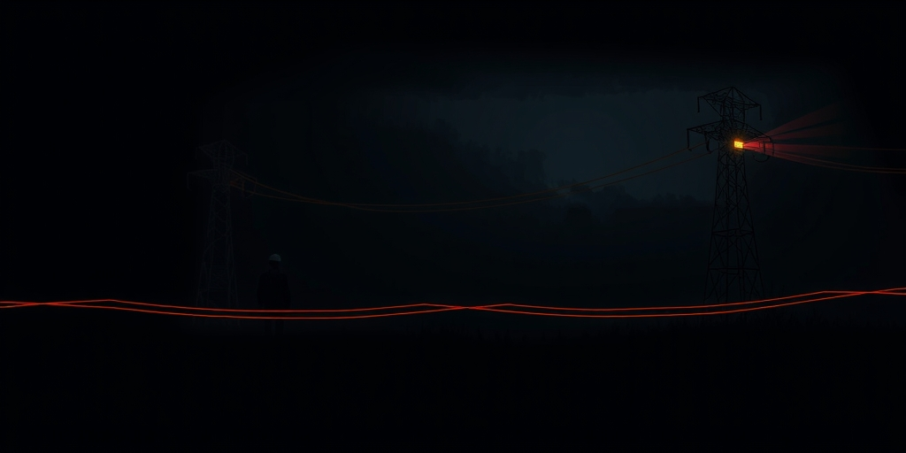
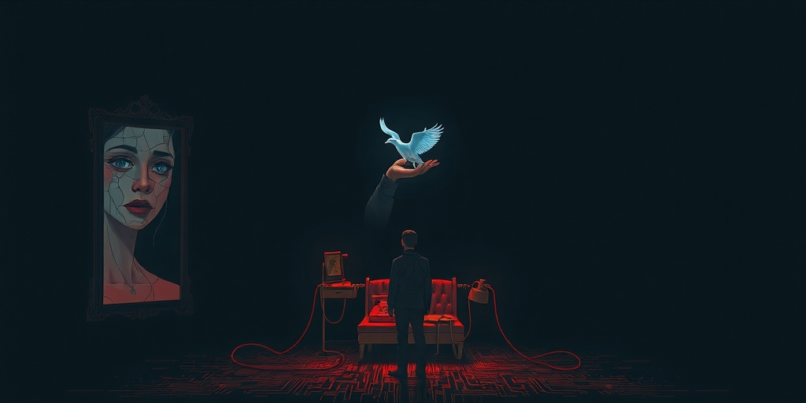

小汪老师的成长洞察 · 属于你的成长专栏
上周和一位做机器人的朋友聊天，他说起自己的行业时眼睛发亮，“我们正在改变世界”。我忽然想起，三十年前另一群人也是这么说的——那群搞程控交换机的通信工程师。如今，他们中的大多数，被人客气地称作“老师傅”。每个时代最酷的行业，最终都逃不过均值回归，但那些不酷的管道，却悄悄收了几十年的过路费。
六十年代，半导体工程师觉得自己在造未来。晶体管是那个时代的魔法，懂它的人万里挑一。七十年代，音响发烧友成了技术品味的象征，一台自己攒的功放就是身份认证。八十年代，家电行业催生了第一批国民品牌神话，流水线上走下来的不是冰箱，是中产生活的入场券。九十年代，通信人站在信息高速公路的起点，华为的早期工程师、北电的研发人员，那时候“搞通信”三个字就是硬通货。
今天呢？半导体成了成熟制造业，利润薄得需要政府补贴。音响发烧友缩成小众复古圈子，二手市场里一台老功放卖不过一部手机。家电行业的价格战打了二十年，一台空调的利润不够吃顿火锅。通信老兵如果还在业内，大概率在带徒弟修基站，年轻人叫他一声“老师傅”，语气里尊敬多过羡慕。
不是他们不优秀了。是那些当年惊天动地的技能，已经被标准化、模块化、写进教科书了。酷这个东西，有保质期。
产品制造和管道运营的本质区别不在技术含量，在竞争结构。产品制造业面临三重诅咒。第一重是技术扩散。当年只有少数人懂半导体设计，现在全球有几十万IC工程师，壁垒被时间磨平。第二重是标准化让技能贬值。你花十年掌握的工艺，一台新设备三天就能搞定，人的经验变成机器的参数。第三重是全球化竞争让利润趋零。除非你能持续占据不可替代的位置，否则迟早有人比你更便宜。
这套逻辑画出一条清晰的生命周期：稀缺引发高溢价，高溢价吸引模仿者，模仿带来扩散，扩散导致过剩，过剩开启内卷。家电如此，通信设备如此，光伏组件如此，新能源汽车的电池和电机也在走同样的路。不是行业不行，是产品制造的终局几乎注定走向薄利。
你回头看，每一个“时代行业”都经历过这个循环。当年觉得不可替代的技术，后来都成了通用能力。当年觉得独一无二的产品，后来在义乌都能找到平替。

管道类生意恰恰相反。电网、通信网、互联网基础设施，它们一旦建成，就变成所有人必须经过的路径。管道收的是过路费，不管上面跑的是家电、手机还是AI应用，都要留下买路钱。这不是技术问题，是位置问题。
管道的护城河来自三个方向。第一是网络效应，用的人越多，管道价值越高，微信和电网都遵循这个逻辑。第二是自然垄断属性，建第二套电网的成本高到荒谬，没人会重复投资。第三是转换成本，换一个互联网基础协议，全人类都得同意，这种协调难度本身就是壁垒。
更关键的是，管道不依赖“酷”来吸引资源。电网运维工程师不需要改变世界的故事，他只需要在暴风雪夜保证线路畅通。这种工作的社会价值恒定，不管技术怎么迭代，有人要用电、要用网。管道不制造稀缺感，所以它不需要对抗稀缺感的消散。
人类追逐“酷”，本质上是在追逐稀缺性和信息不对称带来的优越感。“我知道你不知道”“我能你不能”，这种智力上的优越感真实而强烈。六十年代懂晶体管的人享受过，九十年代懂七号信令的人也享受过。但当一项技术充分扩散，稀缺性消失，优越感就变成怀旧。
酷给行业带来超额关注和人才红利，但也埋下过度竞争的种子。因为酷，聪明人蜂拥而入，加速技术扩散和技能贬值。通信行业当年的火爆，直接导致十年后人才过剩，大批工程师转行做销售。而管道行业因为“不够酷”，长期被低估，反而没有人才泡沫。
枯燥本身就是护城河。没人会因为羡慕电网运维工程师的酷炫生活而涌入这个行业，所以它避开了人才通胀。当产品制造行业在风口上起起落落时，管道行业的人默默在收过路费。酷是一把双刃剑，它让你在上升期光芒万丈，也在繁荣期埋下快速均值回归的种子。

AI的出现给这个框架增加了新维度。电网运送能量，通信网运送信号，互联网运送信息，而AI正在形成的新管道运送的是“判断力”和“决策能力”。以前的管道运送死的资源，AI管道运送活的智能。这是之前所有管道都没有的属性。
但问题也在这里。AI管道会不会有一天也变酷？当调用一个大模型跟今天插上电源一样理所当然时，那些在AI行业里觉得自己站在时代前沿的人，和六十年代半导体工程师之间的区别在哪里？技术扩散的规律不会因为技术更高级就失效。
如果管道的本质是“必须经过的路径”，那AI管道本身会不会被更新的管道取代？在管道里，你是铺管道的、收过路费的，还是站在边上喊“好酷”的人？你现在引以为傲的专业技能，十年后会被写进哪本教科书？
写给你的话
每个时代都有人站在管道边上喊“好酷”。六十年代喊晶体管，九十年代喊通信，今天喊AI。但真正穿越周期的，是那些铺管道的人。他们不制造稀缺感，所以不害怕稀缺感消散。他们不依赖风口，所以风口过去也不慌张。你现在所处的行业，是产品还是管道？你手里的技能，是稀缺的护城河，还是即将扩散的优越感？这个问题，比“什么行业最酷”重要得多。
小汪老师的成长洞察 · 属于你的成长专栏